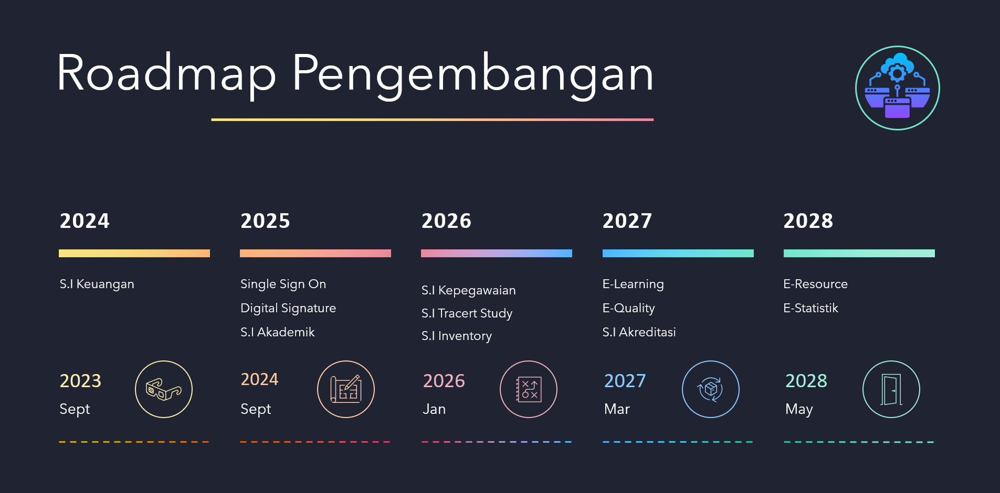
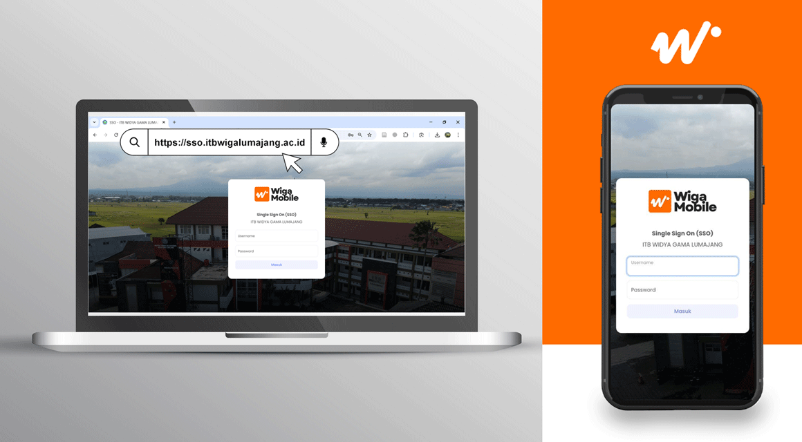
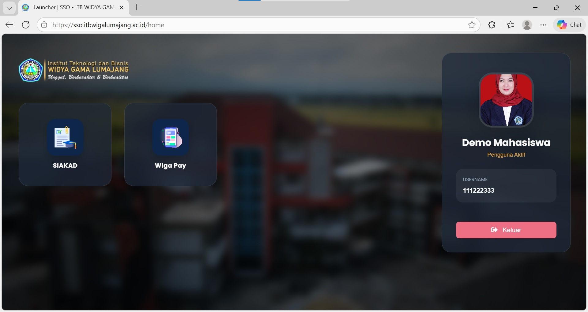
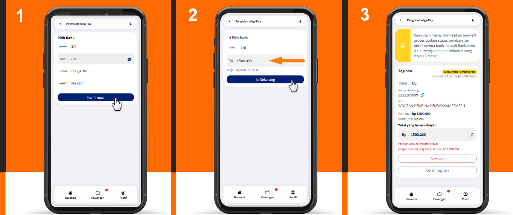

Wiga Mobile merupakan aplikasi sistem informasi terintegrasi yang dikembangkan secara mandiri oleh tim IT Institut Teknologi dan Bisnis Widya Gama Lumajang yang secara resmi diluncurkan pada tanggal 12 Desember 2025 dan secara aktif diterapkan pada periode genap tahun akademik 2025/2026 sebagai wujud komitmen institusi dalam mewujudkan transformasi digital kampus yang berkelanjutan.
Pengembangan Wiga Mobile telah dirancang secara strategis sejak bulan september tahun 2023, diawali dengan pembangunan fondasi sistem inti kampus yang mencakup Sistem Informasi Keuangan, Digital Signature, Single Sign On (SSO), serta Sistem Informasi Akademik. Fondasi ini dikembangkan untuk memastikan keamanan data, efisiensi proses, dan kemudahan akses bagi seluruh civitas akademika.
Wiga Mobile tidak hanya berfungsi sebagai aplikasi, melainkan sebagai ekosistem digital kampus yang mengintegrasikan berbagai layanan dan sistem informasi dalam satu platform terpadu. Ke depan, Wiga Mobile direncanakan untuk terus dikembangkan dengan mengintegrasikan berbagai sistem pendukung lainnya, antara lain Sistem Informasi Kepegawaian, Inventory, Tracert Study, E-Quality, E-Class / Learning Management System, Akreditasi, E-Resource, E-statistik serta layanan digital kampus lainnya yang mendukung proses akademik, administrasi, dan pengambilan keputusan berbasis data.
Melalui satu identitas dan satu akses, Wiga Mobile menghadirkan pengalaman digital yang lebih sederhana, terukur, dan efisien, sekaligus menjadi fondasi bagi terwujudnya kampus cerdas, modern, dan adaptif terhadap perkembangan teknologi.
Untuk memulai menggunakan aplikasi Wiga Mobile baik dengan menggunakan Laptop maupun Smartphone, caranya cukup akses alamat url https://sso.itbwigalumajang.ac.id melalui aplikasi web browser yang tersedia.

Untuk mempermudah apabila menggunakan smartphone, tambahkan shortcut dengan menekan Install saat pertama kali mengakses Wiga Mobile.
Setelah berhasil login, tampilan pertama adalah ekosistem aplikasi yang nantinya akan dikembangkan secara bertahap. Untuk sementara terdapat 2 aplikasi yang sudah siap digunakan oleh temen-temen mahasiswa untuk proses kegiatan akademik yakni Siakad (Sistem Informasi Akademik) dan Wiga Pay (Sistem informasi pembayaran kuliah) dilingkungan Institut Teknologi dan Bisnis Widya Gama Lumajang.
Pembayaran biaya kuliah dilingkungan Institut Teknologi dan Bisnis Widya Gama Lumajang mulai semester Genap tahun akademik 2025/2026 sudah memanfaatkan ekosistem digital Wiga Mobile. Dengan adanya Wiga Mobile, diharapkan proses administrasi keuangan menjadi lebih tertib serta mempercepat proses validasi pembayaran kuliah secara digital.
Untuk mengakses aplikasi Wiga Pay dapat melalui portal Wiga Mobile atau melalui halaman dasboard Siakad.

Pembayaran kuliah melalui Wiga Pay menerapkan 2 fase yaitu:
- Pembayaran Biaya Kuliah (Saldo Wiga Pay)
- Klasifikasi Pembayaran Biaya Kuliah
Fase Pertama
adalah fase dimana mahasiswa melakukan transfer sejumlah nominal yang sesuai ke nomor rekening kampus dengan membuat tiket pembayaran terlebih dahulu pada Wiga Pay sebelum melakukan transfer, supaya sistem dapat mengenali pembayaran yang dilakukan oleh mahasiswa dan menjadi saldo pada aplikasi Wiga Pay.
Pembayaran melalui Bank BRI, BNI, dan Mandiri terdapat penambahan 3 digit kode uniq sebagai identitas pembayaran mahasiswa, dimana 3 digit tersebut akan terbentuk secara random setiap kali membuat tiket pembayaran. Lakukanlah transaksi pembayaran sesuai dengan nominal yang tertera pada aplikasi. Sedangkan untuk Bank Jatim dikarenakan menggunakan Virtual Account maka tanpa adanya penambahan 3 digit kode uniq.
Setelah proses transaksi pembayaran pada bank tujuan selesai, maka sistem akan secara otomatis mengidentifikasi dan merubah saldo Wiga Pay maksimal 15 menit setelah transaksi berhasil.

Fase Kedua
adalah fase dimana mahasiswa melakukan klasifikasi pembayaran terhadap tagihan pembayaran, dimana klasifikasi pembayaran dilakukan secara mandiri dengan nominal yang dapat disesuaikan kebutuhan dan selama saldo Wiga Pay masih tersedia.
Rencana Studi
Absensi
Registrasi Ujian
Registrasi Ujian